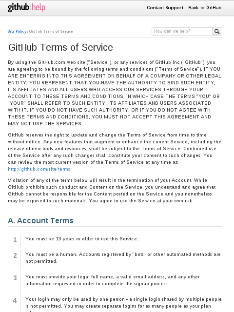

SHORT: Write an email to tosdr@googlegroups.com with a link to the terms, a small quote from the terms about the point you're making and let us know if you think it's a good or a bad point. It's better to do one email thread by topic, rather than one email per service. For more details, read on!
Each thread on our mailing list is a data point that is waiting for you to join in the discussion. You can simply comment by replying to a thread if you think it is an important issue. If you have a link to some positive or negative news about how a website or service is treating us, or you have read something good or something bad in the Terms of Service of a website, you should contribute it to the mailing list as well.
Now: how do we get from this…
to this?
- + Twitter deletes tracking data in 10 days and offers an opt-out
- - Very broad copyright license on your content
- + Promise to inform you about data requests from governments
- - Critical changes to the terms with little users' involvement
- + Transparency on law enforcement requests
Steps
Step #1: find the Terms of a website
This might seem obvious to you, but sometimes it is not really made easy to find where the terms are. You can usually find them at the bottom of pages, typically as links like "Terms" and "Privacy". For anything you do, it is important that we are always able to redirect to the source. ToS;DR is never a substitute for really reading the terms and finding out for yourself.
We have developped a tool that archives the terms of service for us, so that we are aware of all changes happening. But we need your help to track the terms. So when you start reading terms, please check if we have them in our database. You can do that by going to www.tosdr.org, search for the service and click on it to have the details. At the bottom, you should get a list of links to the original terms, privacy policies and other relevant legal documents.
If this information is missing, we need to add it. Please read this guide to learn how to directly edit the XML files. If you do not feel comfortable with this, do not hesitate to send an email to tosback2@eff.org.
Step #2: email about one aspect of the terms
Before you send an email to the group about some terms, please search through the archive to see if other people have already talked about this service. The Google Group archive has a search function. If here are a lot of emails already, please contribute to the relevant threads so that we avoid duplicates.
If the service you want to report about has not been reviewed yet, then it's time to send some emails about it :-) For each point that raises your attention, please consider whether or not it is appropriate to start a new topic for the group. Some hints about do's and dont's:
- ✓ this is something you did not expect in the terms (e.g. a picture hosting service asks you for your full copyright)
- ✓ this is an important restriction of users' rights (e.g. you are not allowed to re-use your own submission to a competing service)
- ✓ you have a legal question about this
- ✓ you do not understand, or it is confusing, uncertain
- ✓ there are already similar issues on tosdr.org (have a look at the topics list) some examples of frequent points include:
- How can the terms change (with or without notification, with or without explicit consent of the changes)
- If the service asks for a copyright license or if similar services ask for a copyright license but this one does not
- If the service shares personal information by default with third-parties, or if it requires cookies and other tracking technologies
- If there are jurisdiction or choice-of-law clauses
- If there are waivers, indemnity clauses, or binding arbitration
- ✗ if this is obvious from using the service and does not have legal implications
- ✗ if this is very standard under the law (e.g. a 13 year old limit)
- ✗ if this is a blank statement that bears no real obligation or no legal value (e.g. Statements like “we take your privacy very seriously”)
- ✗ if this is a repeat of a general legal principle (e.g. clauses like “do not violate the law, misuse trademarks” or “do not lie, give true information when asked”)
Start a topic: what we need
So if you think something is worthy of our attention, please start a new topic for each point you want to raise. Each topic should have this information
- Subject: Name of the service, eventually say if it's good, bad or neutral, and a title of what it's about (e.g.: Amazon [bad] has a binding arbitration clause)
- A link to the terms and, if possible, a quotation of the parts relevant to your point
- These clauses are sometimes overly complicated. Try to synthesize and make a summary of what it means
- Tell us your opinion about this. It can also be a link to a blog post or to an article
Now, we will need to assess how to review your point. Of course, you are welcome to contribute to this. Essentially, please go to the Topics page to have a look at similar issues. Find to which topic your point belongs, and then compare with other clauses. This will help you propose a topic and a score (from 0 to 100; good, neutral, bad or very bad).